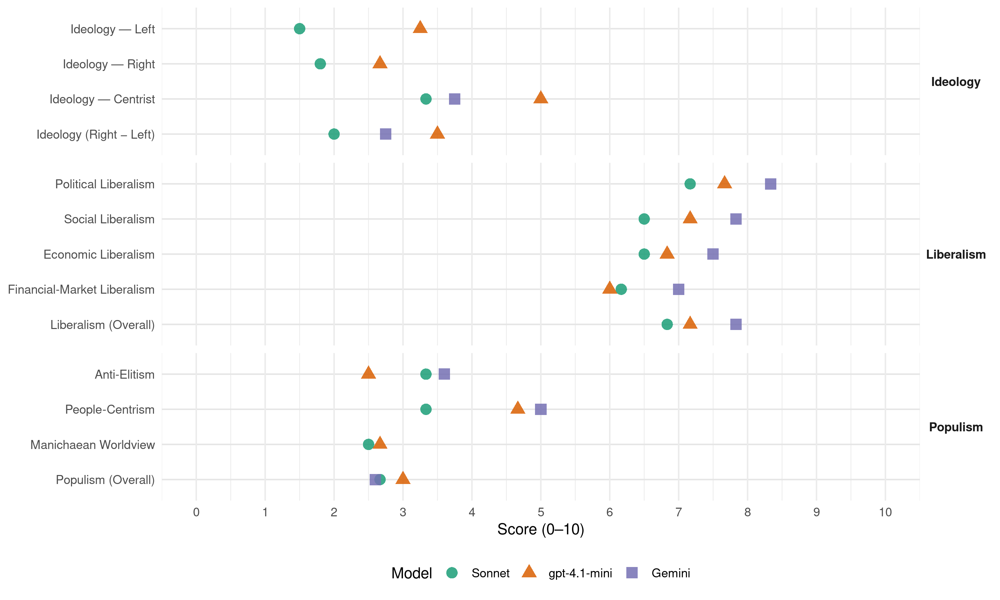

PN (Uruguay, 2014)
manifesto_id 162610_201410
Get full text: This site shows derived annotations and short verbatim quotes only. The full manifesto text is © Manifesto Project / WZB — obtain it via manifesto-project.wzb.eu using the manifesto_id above.
Headline scores
| Dimension | Sonnet | gpt-4.1-mini | Gemini |
|---|---|---|---|
| Populism (Overall) | 2.7 | 3.0 | 2.6 |
| Anti-Elitism | 3.3 | 2.5 | 3.6 |
| People-Centrism | 3.3 | 4.7 | 5.0 |
| Manichaean Worldview | 2.5 | 2.7 | – |
| Ideology (Right − Left) | 2.0 | 3.5 | 2.8 |
| Liberalism (Overall) | 6.8 | 7.2 | 7.8 |
| Political Liberalism | 7.2 | 7.7 | 8.3 |
| Social Liberalism | 6.5 | 7.2 | 7.8 |
| Economic Liberalism | 6.5 | 6.8 | 7.5 |
| Financial-Market Liberalism | 6.2 | 6.0 | 7.0 |
Evidence per dimension
Economic Liberalism
Gemini · score 7.0 · verified · chunk 1
“Eliminar las trabas a la importación”
Eliminar las trabas a la importación de equipamiento médico, al mismo tiempo que se generan acuerdos
Gemini · score 7.0 · verified · chunk 2
“introduciendo incentivos fiscales para empresas”
Medidas de incentivo a la Actividad Empresarial Amigable con el Ambiente Fortalecimiento de la ecofiscalidad, introduciendo incentivos fiscales para empresas que certifiquen su calidad ambiental.
Gemini · score 8.0 · verified · chunk 3
“fortalecerá el área de defensa de la competencia para proteger los intereses de la sociedad.”
Fijación de precios. Nuestro gobierno fortalecerá el área de defensa de la competencia para proteger los intereses de la sociedad. En una economía como la uruguaya existen muchas oportunidades
Gemini · score 8.0 · verified · chunk 4
“permitiendo la participación de nuevos actores”
La importante inversión realizada en la red de fibra óptica debe ser rentabilizada permitiendo la participación de nuevos actores en su utilización.
Gemini · score 8.0 · verified · chunk 5
“permitiendo la comercialización entre privados”
Promover la autogeneración de energía eléctrica, permitiendo la comercialización entre privados a través de la red de UTE
Gemini · score 7.0 · verified · chunk 6
“estimular la generación local por privados”
Quitar la limitación del precio del MWh “spot” para estimular la generación local por privados. * Aprovechar las capacidades hidráulicas, ampliando al máximo
gpt-4.1-mini · score 7.0 · verified · chunk 1
“Queremos un Uruguay con una economía altamente formalizada”
Queremos un Uruguay con una economía altamente formalizada y un sistema jubilatorio sano, fundado en la complementariedad de sus dos pilares (el BPS y las AFAPs), donde se reduzcan los márgenes de incertidumbre y cada trabajador pueda acceder al máximo de protección que el país esté en condiciones de ofrecer.
gpt-4.1-mini · score 6.0 · verified · chunk 2
“incentivos fiscales para empresas que certifiquen su calidad ambiental”
Fortalecimiento de la ecofiscalidad, introduciendo incentivos fiscales para empresas que certifiquen su calidad ambiental. Mejor puntuación en el sistema de compras del Estado para empresas que certifiquen su calidad ambiental.
gpt-4.1-mini · score 7.0 · verified · chunk 3
“Trabajaremos por un país auténticamente productivo y competitivo, con una inflación que no genere incertidumbre”
Trabajaremos por un país auténticamente productivo y competitivo, con una inflación que no genere incertidumbre, un tipo de cambio que no nos debilite frente a nuestros competidores y un “costo país” que no afecte la viabilidad de nuestros emprendimientos productivos.
gpt-4.1-mini · score 7.0 · verified · chunk 4
“La importante inversión realizada en la red de fibra óptica debe ser rentabilizada permitiendo la participación de nuevos actores”
La importante inversión realizada en la red de fibra óptica debe ser rentabilizada permitiendo la participación de nuevos actores en su utilización. Esto permitirá mantener el nivel de inversión necesario para su mantenimiento y desarrollo, de acuerdo a los niveles que demandará la evolución de la sociedad de la información.
gpt-4.1-mini · score 7.0 · verified · chunk 5
“Reducir costos fiscales con medidas tales como el incremento de los topes de deducción del IVA”
Se propone para el quinquenio: Reducir costos fiscales con medidas tales como el incremento de los topes de deducción del IVA para la compra de gasoil productivo y la autorización a liquidar trimestralmente los créditos fiscales por concepto de IVA al gasoil, admitiendo su utilización para el pago de combustible.
gpt-4.1-mini · score 7.0 · verified · chunk 6
“Incrementar los topes de deducción del IVA para la compra de gasoil productivo y del transporte de carga hasta en un 100%”
Políticas y medidas orientadas a aumentar el potencial productivo del interior. Algunos ejemplos son: * Incrementar los topes de deducción del IVA para la compra de gasoil productivo y del transporte de carga hasta en un 100%. * Bajar la tasa del IMEBA hasta en un 20% a los productores pequeños y medianos afectados por este impuesto. * Eliminar hasta el 100% del IVA al gasoil que consume la granja. * Establecer cupos de importación de gasoil, de acuerdo a los precios de paridad de importación, para promediar los precios.
Sonnet · score 5.0 · verified · chunk 1
“Eliminar las trabas a la importación”
Eliminar las trabas a la importación de equipamiento médico, al mismo tiempo que se generan acuerdos con los prestadores para generalizar el acceso a las nuevas tecnologías.
Sonnet · score 6.0 · verified · chunk 2
“incentivos fiscales para empresas que certifiquen”
Fortalecimiento de la ecofiscalidad, introduciendo incentivos fiscales para empresas que certifiquen su calidad ambiental. Mejor puntuación en el sistema de compras del Estado para empresas que certifiquen su calidad ambiental
Sonnet · score 7.0 · verified · chunk 3
“bajar nuestros costos en relación a los costos de nuestros competidores”
Tener un país productivo exige, antes que nada, bajar nuestros costos en relación a los costos de nuestros competidores. Para que eso ocurra, el Estado tiene que dejar de ser un mal socio de nuestros emprendedores.
Sonnet · score 7.0 · verified · chunk 4
“peligro de que se instalen oligopolios”
Esta idea de hacer ‘negocios verticales’ es muy atractiva en términos comerciales, pero genera el peligro de que se instalen oligopolios.
Sonnet · score 7.0 · verified · chunk 5
“apertura de mercados”
Articular la política industrial con la política exterior y muy en especial con la diplomacia comercial, para asegurar la apertura de mercados.
Sonnet · score 7.0 · verified · chunk 6
“Incrementar los topes de deducción del IVA”
Incrementar los topes de deducción del IVA para la compra de gasoil productivo y del transporte de carga hasta en un 100%.
Financial-Market Liberalism
Gemini · score 7.0 · verified · chunk 1
“diversificar sus colocaciones, en un marco”
reduciendo progresivamente el porcentaje de cartera que las AFAPs deben invertir obligatoriamente en papeles públicos y habilitándolas a diversificar sus colocaciones, en un marco de garantías y controles
Gemini · score 7.0 · verified · chunk 2
“utiliza el Banco Central para”
siguiendo un esquema similar al que utiliza el Banco Central para la emisión de Obligaciones Negociables (donde se debe contar con el aval de una calificadora de riesgo).
Gemini · score 7.0 · verified · chunk 3
“Utilizar el mercado de valores para la financiación de obras de infraestructura”
Diversificación de las fuentes de financiamiento de inversiones Entre otras medidas se propone: Concentrar la acción de UTE en la distribución, transmisión y manejo de grandes centrales térmicas, dejando en manos de agentes privados el desarrollo de plantas de biomasa, o de nuevas granjas eólicas o fotovoltaicas. Utilizar el mercado de valores para la financiación de obras de infraestructura para la trasmisión de energía eléctrica y gas natural.
Gemini · score 7.0 · verified · chunk 4
“coticen en bolsa una parte de su capital”
Reforma de las sociedades anónimas del Estado, con el objetivo de que coticen en bolsa una parte de su capital accionario.
gpt-4.1-mini · score 6.0 · verified · chunk 1
“Modificación de la Ley 16.713, reduciendo progresivamente el porcentaje de cartera que las AFAPs deben invertir obligatoriamente en papeles públicos”
Modificación de la Ley 16.713, reduciendo progresivamente el porcentaje de cartera que las AFAPs deben invertir obligatoriamente en papeles públicos y habilitándolas a diversificar sus colocaciones, en un marco de garantías y controles equivalente al que usan los fondos de pensión más confiables a escala internacional.
gpt-4.1-mini · score 6.0 · verified · chunk 3
“Se impulsará la existencia de un órgano competente que centralice los proyectos y las prioridades”
Se impulsará la existencia de un órgano competente que centralice los proyectos y las prioridades, y que actúe en el marco de un Plan Estratégico conocido. Asentamiento Cero. El problema de la vivienda es uno de los grandes rezagos del país.
Sonnet · score 6.0 · verified · chunk 1
“AFAPs están obligadas por ley a colocar”
las AFAPs están obligadas por ley a colocar gran parte de sus activos en papeles del Estado. Esto no sólo afecta los ingresos futuros de los aportantes sino que concentra sus riesgos
Sonnet · score 6.0 · verified · chunk 2
“acceso al microcrédito”
La generalización del acceso a las fuentes de ingreso (en lo que influye desde la educación y la formación profesional hasta la regularización de los títulos de propiedad y el acceso al microcrédito) es uno de los ejes fundamentales del desarrollo social.
Sonnet · score 7.0 · verified · chunk 3
“reducir mediante estímulos la dolarización de los créditos”
hay que proponerse una serie de objetivos específicos, como reducir mediante estímulos la dolarización de los créditos.
Sonnet · score 6.0 · verified · chunk 4
“mercados agropecuarios futuros”
Fomentar desde el Banco Central el desarrollo de mercados agropecuarios futuros, tales como hoy existen principalmente en el área granelera.
Sonnet · score 6.0 · verified · chunk 5
“prefinanciación de exportaciones”
Previsibilidad y continuidad en el régimen de prefinanciación de exportaciones. Hacer un uso intensivo de la Ley de inversiones
Sonnet · score 6.0 · verified · chunk 6
“créditos y subsidios para la recuperación”
Esta red debería canalizar créditos y subsidios para la recuperación y mantenimiento de lugares de interés turístico, así como establecer estándares comunes
Political Liberalism
Gemini · score 8.0 · verified · chunk 1
“Queremos seguridad con Estado de Derecho”
Estamos en contra del uso abusivo de la fuerza. Queremos seguridad con Estado de Derecho. Algunas de las modificaciones
Gemini · score 8.0 · verified · chunk 2
“autonomía técnica, fortaleciendo sus planteles”
DINAMA, DINAGUA y DINARA en agencias independientes del Poder Ejecutivo y dotadas de autonomía técnica, fortaleciendo sus planteles profesionales y su dotación de recursos.
Gemini · score 8.0 · verified · chunk 3
“garantizar el cumplimiento de los derechos de los empresarios y de los trabajadores consagrados en la Constitución”
El gobierno debe garantizar el cumplimiento de los derechos de los empresarios y de los trabajadores consagrados en la Constitución de la República, los Convenios Internacionales del Trabajo ratificados por Uruguay y nuestra legislación interna.
Gemini · score 8.0 · verified · chunk 4
“debe actuar en forma ecuánime”
Las reglas de juego deben ser establecidas y fiscalizadas por el regulador, que debe actuar en forma ecuánime.
Gemini · score 9.0 · verified · chunk 5
“adhesión a la democracia representativa y al orden jurídico”
los uruguayos nos destacamos por nuestra adhesión a la democracia representativa y al orden jurídico. Creemos que la voluntad
Gemini · score 9.0 · verified · chunk 6
“Respeto absoluto de la independencia del Poder Judicial”
dentro del Instituto Nacional de Derechos Humanos. Respeto absoluto de la independencia del Poder Judicial y pleno apoyo al trabajo de la justicia en la
gpt-4.1-mini · score 8.0 · verified · chunk 1
“Queremos seguridad con Estado de Derecho”
No queremos un orden legal impotente ante el crecimiento del delito. Tampoco queremos “gatillo fácil”. Estamos en contra del uso abusivo de la fuerza. Queremos seguridad con Estado de Derecho.
gpt-4.1-mini · score 7.0 · verified · chunk 2
“control parlamentario”
El modelo normalmente usado en las democracias para gobernar la educación consiste en poner la política educativa en manos de un Ministerio de Educación sometido a control parlamentario. Los uruguayos tenemos un ordenamiento institucional diferente, pero eso no nos obliga a renunciar al control ciudadano.
gpt-4.1-mini · score 7.0 · verified · chunk 3
“El gobierno debe garantizar el cumplimiento de los derechos de los empresarios y de los trabajadores consagrados en la Constitución de la República”
El gobierno debe garantizar el cumplimiento de los derechos de los empresarios y de los trabajadores consagrados en la Constitución de la República, los Convenios Internacionales del Trabajo ratificados por Uruguay y nuestra legislación interna.
gpt-4.1-mini · score 7.0 · verified · chunk 4
“La neutralidad de la red es una condición para proteger el ejercicio de la libertad de información y de expresión”
Neutralidad de la red. La neutralidad de la red es una condición para proteger el ejercicio de la libertad de información y de expresión. Esto no impide necesariamente que operadores de Internet ingresen en el negocio de los contenidos (por ejemplo, vendiendo un servicio de video sobre Internet propio), pero requiere normas que garanticen que el operador no les dará prioridad respecto de servicios a terceros.
gpt-4.1-mini · score 8.0 · verified · chunk 5
“Nuestra fidelidad a las instituciones republicanas es una parte esencial de lo que nos define como nación”
Puede que el gobierno haya vivido cada una de esas decisiones como una derrota, pero fueron victorias para el conjunto de los uruguayos. Nuestra fidelidad a las instituciones republicanas es una parte esencial de lo que nos define como nación. En un continente que ha conocido todas las aventuras políticas, los uruguayos nos destacamos por nuestra adhesión a la democracia representativa y al orden jurídico.
gpt-4.1-mini · score 9.0 · verified · chunk 6
“Acceso a la información pública. La Ley de Acceso a la Información Pública fue un avance”
de los usuarios, o desde centros públicos. Acceso a la información pública. La Ley de Acceso a la Información Pública fue un avance, pero no se la está aplicando en forma correcta. Con cierta frecuencia hay atrasos, o la información se entrega de manera incompleta. Al mismo tiempo el Estado entrega a privados información que no debería brindar por ser de carácter reservado. Nos proponemos cumplir la ley como corresponde e introducir mejoras para brindar más seguridad y transparencia a los ciudadanos. Pedidos de informes de los legisladores. Se ha vuelto costumbre que los pedidos de informes de los legisladores queden sin respuesta, o sean respondidos con tanta demora que la información pierde vigencia. Por tal razón propondremos que se considere falta grave la ausencia de respuesta a un pedido de informes dentro del plazo establecido por la Ley 17.673. En aplicación del artículo 199 de la Constitución, los ministros deberán concurrir al Parlamento para dar las explicaciones del caso.
Sonnet · score 6.0 · verified · chunk 1
“Queremos seguridad con Estado de Derecho”
No queremos ‘gatillo fácil’. Estamos en contra del uso abusivo de la fuerza. Queremos seguridad con Estado de Derecho.
Sonnet · score 7.0 · verified · chunk 2
“control ciudadano sobre el sistema educativo”
Política de fortalecimiento del control ciudadano sobre el sistema educativo. El modelo normalmente usado en las democracias para gobernar la educación consiste en poner la política educativa en manos de un Ministerio de Educación sometido a control parlamentario.
Sonnet · score 7.0 · verified · chunk 3
“Autonomía del Banco Central”
Se tomarán medidas normativas y políticas para reforzar en forma adecuada la autonomía al Banco Central y ponerlo a salvo de presiones generadas por la coyuntura.
Sonnet · score 7.0 · verified · chunk 4
“intervención judicial”
El Estado podrá acceder a la información que las nuevas tecnologías son capaces de proporcionar, pero sólo en un marco que ofrezca las debidas garantías y con intervención judicial.
Sonnet · score 8.0 · verified · chunk 5
“división de poderes y en el gobierno limitado”
Por eso hemos creído siempre en la división de poderes y en el gobierno limitado. Un componente esencial de nuestro programa de gobierno consiste en respetar y fortalecer este pilar de nuestra tradición nacional.
Sonnet · score 8.0 · verified · chunk 6
“Estado de Derecho es el principal instrumento”
entendemos que el Estado de Derecho es el principal instrumento para defenderla. La protección de los derechos humanos no tiene color político
Liberalism (Overall)
Gemini · score 7.0 · verified · chunk 1
“Queremos seguridad con Estado de Derecho”
Estamos en contra del uso abusivo de la fuerza. Queremos seguridad con Estado de Derecho. Algunas de las modificaciones
Gemini · score 8.0 · verified · chunk 2
“combatir este problema. Aspiramos a”
Plan Discriminación Cero buscará coordinar y fortalecer el conjunto de las acciones públicas que se orientan a combatir este problema. Aspiramos a una sociedad compuesta por
Gemini · score 8.0 · verified · chunk 3
“fortalecerá el área de defensa de la competencia para proteger los intereses de la sociedad.”
Fijación de precios. Nuestro gobierno fortalecerá el área de defensa de la competencia para proteger los intereses de la sociedad. En una economía como la uruguaya existen muchas oportunidades
Gemini · score 8.0 · verified · chunk 4
“debe actuar en forma ecuánime”
Las reglas de juego deben ser establecidas y fiscalizadas por el regulador, que debe actuar en forma ecuánime.
Gemini · score 8.0 · verified · chunk 5
“adhesión a la democracia representativa y al orden jurídico”
los uruguayos nos destacamos por nuestra adhesión a la democracia representativa y al orden jurídico. Creemos que la voluntad
Gemini · score 8.0 · verified · chunk 6
“Respeto absoluto de la independencia del Poder Judicial”
dentro del Instituto Nacional de Derechos Humanos. Respeto absoluto de la independencia del Poder Judicial y pleno apoyo al trabajo de la justicia en la
gpt-4.1-mini · score 7.0 · verified · chunk 1
“Queremos seguridad con Estado de Derecho”
No queremos un orden legal impotente ante el crecimiento del delito. Tampoco queremos “gatillo fácil”. Estamos en contra del uso abusivo de la fuerza. Queremos seguridad con Estado de Derecho.
gpt-4.1-mini · score 7.0 · verified · chunk 2
“control parlamentario”
El modelo normalmente usado en las democracias para gobernar la educación consiste en poner la política educativa en manos de un Ministerio de Educación sometido a control parlamentario. Los uruguayos tenemos un ordenamiento institucional diferente, pero eso no nos obliga a renunciar al control ciudadano.
gpt-4.1-mini · score 7.0 · verified · chunk 3
“Trabajaremos por un país auténticamente productivo y competitivo, con una inflación que no genere incertidumbre”
Trabajaremos por un país auténticamente productivo y competitivo, con una inflación que no genere incertidumbre, un tipo de cambio que no nos debilite frente a nuestros competidores y un “costo país” que no afecte la viabilidad de nuestros emprendimientos productivos.
gpt-4.1-mini · score 7.0 · verified · chunk 4
“La neutralidad de la red es una condición para proteger el ejercicio de la libertad de información y de expresión”
Neutralidad de la red. La neutralidad de la red es una condición para proteger el ejercicio de la libertad de información y de expresión. Esto no impide necesariamente que operadores de Internet ingresen en el negocio de los contenidos (por ejemplo, vendiendo un servicio de video sobre Internet propio), pero requiere normas que garanticen que el operador no les dará prioridad respecto de servicios a terceros.
gpt-4.1-mini · score 7.0 · verified · chunk 5
“Queremos un Estado transparente, eficiente y cercano a los ciudadanos”
Queremos un Estado transparente, eficiente y cercano a los ciudadanos. Queremos también un Estado que trate con respeto a los funcionarios públicos, dándoles oportunidades de construir una carrera profesional que les permita desarrollar sus mejores potencialidades.
gpt-4.1-mini · score 8.0 · verified · chunk 6
“Acceso a la información pública. La Ley de Acceso a la Información Pública fue un avance”
de los usuarios, o desde centros públicos. Acceso a la información pública. La Ley de Acceso a la Información Pública fue un avance, pero no se la está aplicando en forma correcta. Con cierta frecuencia hay atrasos, o la información se entrega de manera incompleta. Al mismo tiempo el Estado entrega a privados información que no debería brindar por ser de carácter reservado. Nos proponemos cumplir la ley como corresponde e introducir mejoras para brindar más seguridad y transparencia a los ciudadanos. Pedidos de informes de los legisladores. Se ha vuelto costumbre que los pedidos de informes de los legisladores queden sin respuesta, o sean respondidos con tanta demora que la información pierde vigencia. Por tal razón propondremos que se considere falta grave la ausencia de respuesta a un pedido de informes dentro del plazo establecido por la Ley 17.673. En aplicación del artículo 199 de la Constitución, los ministros deberán concurrir al Parlamento para dar las explicaciones del caso.
Sonnet · score 6.0 · verified · chunk 1
“rol rector y regulador, pero no sustitutivo”
Por eso asignamos al Estado un rol rector y regulador, pero no sustitutivo ni interventor. Su papel es diseñar e impulsar estrategias
Sonnet · score 7.0 · verified · chunk 2
“reglas de juego claras y válidas para todos”
Aspiramos a desarrollar una política de medio ambiente integral y de alcance nacional, que fortalezca el papel rector del Estado mediante el diseño y aplicación de reglas de juego claras y válidas para todos.
Sonnet · score 7.0 · verified · chunk 3
“Seguridad jurídica”
Seguridad jurídica. La actividad económica en general, y la inversión en particular, necesitan reglas claras y firmes que den previsibilidad a la toma de decisiones y generen un clima de confianza.
Sonnet · score 7.0 · verified · chunk 4
“reglas de juego claras y buena calidad institucional”
Hacen falta reglas de juego claras y buena calidad institucional. La actividad agropecuaria tiene tiempos largos para la maduración de las inversiones.
Sonnet · score 7.0 · verified · chunk 5
“reglas de juego claras y permanentes”
Es imprescindible que existan reglas de juego claras y permanentes, que proporcionen las certezas necesarias para el desarrollo de la inversión.
Sonnet · score 7.0 · verified · chunk 6
“Nunca aceptaremos que lo político prevalezca sobre lo jurídico”
Nos comprometemos a ser estrictamente respetuosos del Estado de Derecho como la vía más eficaz para extender las garantías fundamentales a todos los miembros de la sociedad. Nunca aceptaremos que lo político prevalezca sobre lo jurídico.
Anti-Elitism
Gemini · score 4.0 · verified · chunk 1
“gobiernos del Frente Amplio han fracasado”
Las dificultades actuales Los gobiernos del Frente Amplio han fracasado en el manejo de la seguridad.
Gemini · score 4.0 · verified · chunk 3
“Las políticas culturales impulsadas por los últimos dos gobiernos han tenido sesgo político.”
Los principales problemas que han impedido un mejor aprovechamiento de los recursos invertidos en estos años son los siguientes: Las políticas culturales impulsadas por los últimos dos gobiernos han tenido sesgo político. Buena parte de las actividades realizadas no se propusieron promover la cultura
Gemini · score 4.0 · verified · chunk 4
“privilegiado a los funcionarios políticos sobre los técnicos”
Los gobiernos del Frente Amplio han privilegiado a los funcionarios políticos sobre los técnicos, con resultados negativos para los intereses del país.
Gemini · score 3.0 · verified · chunk 5
“políticos que practican el capitalismo de amigos”
gobernado por burocracias opacas, ni por políticos que practican el capitalismo de amigos, ni por corporaciones
Gemini · score 3.0 · verified · chunk 6
“Los gobiernos del Frente Amplio han puesto en peligro”
nos aseguraron ese sitial de prestigio. Los gobiernos del Frente Amplio han puesto en peligro esa tradición construida durante décadas. En lugar de desarrollar
gpt-4.1-mini · score 3.0 · verified · chunk 1
“Los gobiernos del Frente Amplio han fracasado en el manejo de la seguridad”
Las dificultades actuales Los gobiernos del Frente Amplio han fracasado en el manejo de la seguridad. Eso se debe a muchas razones, pero algunas de las más importantes son estas: Los gobiernos del Frente Amplio han encarado el tema con una visión anclada en el pasado: en lugar de ver a los policías como ciudadanos encargados de cuidar a sus conciudadanos, los han visto como un antiguo enemigo al que hay que controlar.
gpt-4.1-mini · score 2.0 · verified · chunk 2
“los jerarcas del Estado quieren resolverlo todo desde sus escritorios”
Son políticas fuertemente estatistas, que desaprovechan la capacidad de iniciativa y la experiencia acumulada en la sociedad. Los jerarcas del Estado quieren resolverlo todo desde sus escritorios. El resultado es mucha burocracia, muchos funcionarios y baja capacidad de introducir cambios en las condiciones de vida de los beneficiarios.
gpt-4.1-mini · score 2.0 · verified · chunk 3
“Las políticas culturales impulsadas por los últimos dos gobiernos han tenido sesgo político”
Las políticas culturales impulsadas por los últimos dos gobiernos han tenido sesgo político. Buena parte de las actividades realizadas no se propusieron promover la cultura en general, sino apoyar a quienes reproducen visiones de la realidad, justificaciones y “relatos” que favorecen una causa política específica.
gpt-4.1-mini · score 3.0 · verified · chunk 5
“la apelaciones a la mayoría (real o ficticia) se han usado como argumento para justificar limitaciones a los derechos fundamentales”
En buena parte de América Latina, los últimos años han sido un período de deterioro institucional. La seguridad jurídica se ha visto debilitada, los personalismos han pasado por encima de las reglas de juego, la apelaciones a la mayoría (real o ficticia) se han usado como argumento para justificar limitaciones a los derechos fundamentales. En varios países vecinos la justicia ha perdido independencia, la prensa se ha visto acosada, el aparato del Estado ha sido usado para amedrentar opositores y la actividad económica ha sido dañada por una pérdida general de previsibilidad y garantías.
Sonnet · score 4.0 · verified · chunk 1
“Los gobiernos del Frente Amplio han fracasado”
Las dificultades actuales. Los gobiernos del Frente Amplio han fracasado en el manejo de la seguridad. Eso se debe a muchas razones
Sonnet · score 4.0 · verified · chunk 2
“Los jerarcas del Estado quieren resolverlo todo desde sus escritorios”
Son políticas fuertemente estatistas, que desaprovechan la capacidad de iniciativa y la experiencia acumulada en la sociedad. Los jerarcas del Estado quieren resolverlo todo desde sus escritorios. El resultado es mucha burocracia, muchos funcionarios y baja capacidad de introducir cambios
Sonnet · score 2.0 · verified · chunk 3
“Cultura no es un conjunto de actividades reservadas para una élite sofisticada”
CULTURA Cultura no es un conjunto de actividades reservadas para una élite sofisticada, ni tampoco cualquier cosa que aparezca en una página impresa
Sonnet · score 3.0 · verified · chunk 4
“gobiernos del Frente Amplio han privilegiado a los funcionarios políticos sobre los técnicos”
Los gobiernos del Frente Amplio han privilegiado a los funcionarios políticos sobre los técnicos, con resultados negativos para los intereses del país.
Sonnet · score 4.0 · verified · chunk 5
“diplomacia de ‘afinidades ideológicas’”
La diplomacia fundada en los intereses nacionales de mediano y largo plazo fue sustituida por una diplomacia de ‘afinidades ideológicas’. Esta apuesta no funcionó
Sonnet · score 3.0 · verified · chunk 6
“desarrollaron una política exterior de partido”
En lugar de desarrollar una política exterior anclada en un amplio consenso multipartidario, desarrollaron una política exterior de partido. En lugar de defender los canales institucionales
Ideology — Centrist
Gemini · score 4.0 · verified · chunk 1
“Un país es un “nosotros” compuesto”
Un país es algo más que una suma de individuos. Un país es un “nosotros” compuesto de personas que comparten proyectos
Gemini · score 4.0 · verified · chunk 3
“ampliar el acceso de todos los uruguayos a bienes genuinamente culturales.”
Nuestras políticas culturales estarán orientadas a ampliar el acceso de todos los uruguayos a bienes genuinamente culturales. Las dificultades actuales Los últimos dos gobiernos han gastado mucho dinero
Gemini · score 3.0 · verified · chunk 4
“privilegiado a los funcionarios políticos sobre los técnicos”
Los gobiernos del Frente Amplio han privilegiado a los funcionarios políticos sobre los técnicos, con resultados negativos para los intereses del país.
Gemini · score 4.0 · verified · chunk 5
“Queremos un país de ciudadanos”
capitalismo de amigos, ni por corporaciones centradas en la defensa de sus propios intereses. Queremos un país de ciudadanos. Con reglas claras.
gpt-4.1-mini · score 7.0 · verified · chunk 1
“Un país es un “nosotros” compuesto de personas que comparten proyectos”
Agenda de gobierno del Partido Nacional Capítulo 1 Introducción Un país es algo más que una suma de individuos. Un país es un “nosotros” compuesto de personas que comparten proyectos, esperanzas, necesidades, preocupaciones. Ser país significa asumir que cada uruguayo cuenta.
gpt-4.1-mini · score 4.0 · verified · chunk 2
“un país de oportunidades es un país que no se conforma con asalariar la pobreza”
Un país de oportunidades es un país que no se conforma con asalariar la pobreza ni con generar personas dependientes de la ayuda estatal. Queremos trabajar por una auténtica inclusión, en lugar de conformarnos con indemnizar la exclusión.
gpt-4.1-mini · score 5.0 · verified · chunk 3
“Nuestras políticas culturales estarán orientadas a ampliar el acceso de todos los uruguayos”
Nuestras políticas culturales estarán orientadas a ampliar el acceso de todos los uruguayos a bienes genuinamente culturales. Las dificultades actuales Los últimos dos gobiernos han gastado mucho dinero en políticas culturales.
gpt-4.1-mini · score 4.0 · verified · chunk 5
“Queremos un país de ciudadanos. Con reglas claras. Con derechos y deberes bien definidos.”
No queremos un país gobernado por burocracias opacas, ni por políticos que practican el capitalismo de amigos, ni por corporaciones centradas en la defensa de sus propios intereses. Queremos un país de ciudadanos. Con reglas claras. Con derechos y deberes bien definidos. Queremos que, pase lo que pase en la región, los uruguayos podamos seguir sintiéndonos orgullosos de nuestras instituciones, como siempre ha sido.
Sonnet · score 5.0 · verified · chunk 1
“No queremos gobernar dividiendo”
No queremos gobernar dividiendo ni alentando el resentimiento. Queremos un país donde vuelva a ser lindo vivir.
Sonnet · score 5.0 · verified · chunk 2
“Queremos un país de oportunidades”
No queremos un país de asistencialismo. Queremos un país de oportunidades. Un país donde cada uruguayo, independientemente del hogar en el que haya nacido, tenga una posibilidad real de desplegar sus talentos y virtudes.
Sonnet · score 2.0 · verified · chunk 3
“políticas culturales pluralistas”
Aspiramos a desarrollar políticas culturales pluralistas (es decir, desvinculadas de todo sesgo político-partidario), que alcancen a la mayor cantidad posible de uruguayos.
Sonnet · score 2.0 · verified · chunk 4
“reglas de juego claras”
Hacen falta reglas de juego claras y buena calidad institucional. La actividad agropecuaria tiene tiempos largos para la maduración de las inversiones.
Sonnet · score 3.0 · verified · chunk 5
“intereses nacionales de mediano y largo plazo”
La diplomacia fundada en los intereses nacionales de mediano y largo plazo fue sustituida por una diplomacia de ‘afinidades ideológicas’.
Sonnet · score 3.0 · verified · chunk 6
“amplios acuerdos posibles entre los diferentes partidos”
devolverle a la política exterior el carácter de política de Estado, fundada en los más amplios acuerdos posibles entre los diferentes partidos con representación parlamentaria
Ideology — Left
gpt-4.1-mini · score 3.0 · verified · chunk 1
“Los gobiernos del Frente Amplio adoptaron una visión ingenua e ideologizada”
Los gobiernos del Frente Amplio adoptaron una visión ingenua e ideologizada sobre los orígenes del delito y sobre las formas de combatirlo. Creen que al delito se lo puede controlar atendiendo únicamente a sus causas sociales y confunden el autoritarismo con el sano ejercicio de la autoridad.
gpt-4.1-mini · score 3.0 · verified · chunk 2
“políticas sociales impulsadas por los gobiernos del Frente Amplio consumen mucho dinero”
Las políticas sociales impulsadas por los gobiernos del Frente Amplio consumen mucho dinero, alimentan grandes estructuras burocráticas, pero generan pocos resultados. Son políticas fuertemente estatistas, que desaprovechan la capacidad de iniciativa y la experiencia acumulada en la sociedad.
gpt-4.1-mini · score 4.0 · verified · chunk 3
“La visión predominante en los últimos dos gobiernos es que la redistribución que importa es la de los ingresos”
La visión predominante en los últimos dos gobiernos es que la redistribución que importa es la de los ingresos, cuando la evidencia internacional muestra que lo importante es redistribuir las oportunidades. No necesariamente una conduce a la otra.
gpt-4.1-mini · score 3.0 · verified · chunk 5
“la diplomacia fundada en los intereses nacionales de mediano y largo plazo fue sustituida por una diplomacia de “afinidades ideológicas””
El debilitamiento de la diplomacia comercial llevó a que la discusión con los países vecinos se alejara de los temas vitales para nuestra economía y se centrara en temas de dudosa importancia política. La diplomacia fundada en los intereses nacionales de mediano y largo plazo fue sustituida por una diplomacia de “afinidades ideológicas”. Esta apuesta no funcionó en el gobierno de Tabaré Vázquez (que nunca consiguió asegurar la circulación por los puentes internacionales) ni tampoco en el gobierno de José Mujica (que tuvo un éxito inicial al levantar el corte pero luego se limitó a conceder sin conseguir nada a cambio).
Sonnet · score 2.0 · verified · chunk 1
“protección y apoyo para todos”
Un Uruguay mejor se construye ofreciendo protección y apoyo para todos. Ningún país puede ser un buen lugar para vivir si sólo es bueno para unos pocos.
Sonnet · score 2.0 · verified · chunk 2
“minorías étnicas, personas con discapacidades”
No es lo mismo llevar años en una situación de exclusión que haber caído recientemente en ella o pertenecer a un grupo en situación de riesgo (chacareros, pequeños emprendedores, minorías étnicas, personas con discapacidades).
Sonnet · score 1.0 · verified · chunk 3
“redistribuir las oportunidades”
la evidencia internacional muestra que lo importante es redistribuir las oportunidades. No necesariamente una conduce a la otra.
Sonnet · score 1.0 · verified · chunk 4
“protección de los usuarios”
Aprobación de una nueva Ley de Telecomunicaciones orientada a fomentar la protección de los usuarios, el desarrollo de la inversión, la innovación tecnológica.
Sonnet · score 1.0 · verified · chunk 5
“estimulen el desarrollo de capacidades nacionales”
Analizar modificaciones al sistema de compras del Estado que estimulen el desarrollo de capacidades nacionales y generen oportunidades para micro, pequeñas y medianas empresas.
Sonnet · score 2.0 · verified · chunk 6
“Bajar la tasa del IMEBA hasta en un 20%”
Bajar la tasa del IMEBA hasta en un 20% a los productores pequeños y medianos afectados por este impuesto.
Ideology (Right − Left)
Gemini · score 3.0 · verified · chunk 1
“Un país es un “nosotros” compuesto”
Un país es algo más que una suma de individuos. Un país es un “nosotros” compuesto de personas que comparten proyectos
Gemini · score 3.0 · verified · chunk 3
“ampliar el acceso de todos los uruguayos a bienes genuinamente culturales.”
Nuestras políticas culturales estarán orientadas a ampliar el acceso de todos los uruguayos a bienes genuinamente culturales. Las dificultades actuales Los últimos dos gobiernos han gastado mucho dinero
Gemini · score 2.0 · verified · chunk 4
“privilegiado a los funcionarios políticos sobre los técnicos”
Los gobiernos del Frente Amplio han privilegiado a los funcionarios políticos sobre los técnicos, con resultados negativos para los intereses del país.
Gemini · score 3.0 · verified · chunk 5
“Queremos un país de ciudadanos”
capitalismo de amigos, ni por corporaciones centradas en la defensa de sus propios intereses. Queremos un país de ciudadanos. Con reglas claras.
gpt-4.1-mini · score 4.0 · verified · chunk 1
“Los gobiernos del Frente Amplio han fracasado en el manejo de la seguridad”
Las dificultades actuales Los gobiernos del Frente Amplio han fracasado en el manejo de la seguridad. Eso se debe a muchas razones, pero algunas de las más importantes son estas: Los gobiernos del Frente Amplio han encarado el tema con una visión anclada en el pasado: en lugar de ver a los policías como ciudadanos encargados de cuidar a sus conciudadanos, los han visto como un antiguo enemigo al que hay que controlar.
gpt-4.1-mini · score 3.0 · verified · chunk 2
“políticas sociales impulsadas por los gobiernos del Frente Amplio consumen mucho dinero”
Las políticas sociales impulsadas por los gobiernos del Frente Amplio consumen mucho dinero, alimentan grandes estructuras burocráticas, pero generan pocos resultados. Son políticas fuertemente estatistas, que desaprovechan la capacidad de iniciativa y la experiencia acumulada en la sociedad.
gpt-4.1-mini · score 4.0 · verified · chunk 3
“Las políticas culturales impulsadas por los últimos dos gobiernos han tenido sesgo político”
Las políticas culturales impulsadas por los últimos dos gobiernos han tenido sesgo político. Buena parte de las actividades realizadas no se propusieron promover la cultura en general, sino apoyar a quienes reproducen visiones de la realidad, justificaciones y “relatos” que favorecen una causa política específica.
gpt-4.1-mini · score 3.0 · verified · chunk 5
“la diplomacia fundada en los intereses nacionales de mediano y largo plazo fue sustituida por una diplomacia de “afinidades ideológicas””
El debilitamiento de la diplomacia comercial llevó a que la discusión con los países vecinos se alejara de los temas vitales para nuestra economía y se centrara en temas de dudosa importancia política. La diplomacia fundada en los intereses nacionales de mediano y largo plazo fue sustituida por una diplomacia de “afinidades ideológicas”. Esta apuesta no funcionó en el gobierno de Tabaré Vázquez (que nunca consiguió asegurar la circulación por los puentes internacionales) ni tampoco en el gobierno de José Mujica (que tuvo un éxito inicial al levantar el corte pero luego se limitó a conceder sin conseguir nada a cambio).
Sonnet · score 3.0 · verified · chunk 1
“Queremos construir un Uruguay mejor”
Nosotros queremos construir un Uruguay mejor. Queremos construir un país que cuide a su gente.
Sonnet · score 3.0 · verified · chunk 2
“Queremos un país con justicia social”
Introducción Queremos un país con justicia social. Pero no una justicia que iguale para abajo y debilite la capacidad de iniciativa, sino una justicia que dé alas y ensanche horizontes.
Sonnet · score 1.0 · verified · chunk 3
“políticas culturales pluralistas”
Aspiramos a desarrollar políticas culturales pluralistas (es decir, desvinculadas de todo sesgo político-partidario), que alcancen a la mayor cantidad posible de uruguayos.
Sonnet · score 1.0 · verified · chunk 4
“Articulación público-privado”
Articulación público-privado. Es normal que un operador como ANTEL, de propiedad pública y alta rentabilidad, desempeñe un papel protagónico en las inversiones tecnológicas.
Sonnet · score 2.0 · verified · chunk 5
“un Estado mejor”
No se trata de más o menos Estado. Se trata de un Estado mejor.
Sonnet · score 2.0 · verified · chunk 6
“afinidades ideológicas deben dejar paso”
Las afinidades ideológicas deben dejar paso a la consideración de los intereses de mediano y largo plazo del país
Ideology — Right
gpt-4.1-mini · score 2.0 · verified · chunk 1
“No queremos gobernar dividiendo ni alentando el resentimiento”
Nadie debe quedar atrás. No queremos gobernar dividiendo ni alentando el resentimiento. Queremos un país donde vuelva a ser lindo vivir. Queremos un país que cuide a su gente.
gpt-4.1-mini · score 3.0 · verified · chunk 3
“El Uruguay es hoy un país comercialmente aislado, rehén de un Mercosur que se ha desnaturalizado”
El Uruguay es hoy un país comercialmente aislado, rehén de un Mercosur que se ha desnaturalizado. La política exterior fundada en afinidades ideológicas, que fue impulsada por los últimos dos presidentes, ha generado muchos daños.
gpt-4.1-mini · score 3.0 · verified · chunk 5
“El Mercosur ha dejado de ser una herramienta de integración abierta al mundo para convertirse en instrumento de las políticas proteccionistas”
El Mercosur ha dejado de ser una herramienta de integración abierta al mundo para convertirse en instrumento de las políticas proteccionistas impulsadas con nuestros vecinos. Como resultado, la pertenencia al bloque nos ha conducido a un creciente aislamiento comercial: hemos renunciado a negociar acuerdos bilaterales con terceros países sin poder beneficiarnos a cambio de las oportunidades a las que podríamos acceder a través del bloque (como la propuesta de acuerdo entre la Unión Europea y el Mercosur) porque algunos de nuestros socios las bloquean.
Sonnet · score 3.0 · verified · chunk 1
“radarización de las fronteras”
Se avanzará en la radarización de las fronteras, mediante una coordinación entre Ministerio de Interior y Defensa que permita optimizar la utilización de radares y scanners.
Sonnet · score 1.0 · verified · chunk 3
“recuperar nuestras tradiciones”
Pese a lo declarativo, el gobierno nacional restó apoyo a la celebración y cultivo de nuestras tradiciones.
Sonnet · score 1.0 · verified · chunk 4
“seguridad jurídica”
Garantizar por todos los medios la seguridad jurídica, eliminando incertidumbres sobre el cumplimiento de las normas existentes.
Sonnet · score 2.0 · verified · chunk 5
“seguridad jurídica, eliminando incertidumbres”
Garantizar por todos los medios la seguridad jurídica, eliminando incertidumbres sobre el cumplimiento de las normas existentes y asegurando la continuidad en el tiempo de las reglas de juego fundamentales.
Sonnet · score 2.0 · verified · chunk 6
“respeto irrestricto a los principios del Derecho Internacional”
una política vigorosa de promoción del comercio y la cooperación, y el respeto irrestricto a los principios del Derecho Internacional
Manichaean Worldview
gpt-4.1-mini · score 4.0 · verified · chunk 1
“No queremos gobernar dividiendo ni alentando el resentimiento”
Nadie debe quedar atrás. No queremos gobernar dividiendo ni alentando el resentimiento. Queremos un país donde vuelva a ser lindo vivir. Queremos un país que cuide a su gente.
gpt-4.1-mini · score 2.0 · verified · chunk 2
“la sociedad uruguaya se ha fracturado”
La sociedad uruguaya se ha fracturado: mientras una parte de la población tiene un buen nivel de vida y puede aspirar a mejorarlo, otros viven en condiciones de exclusión y marginalidad. Pese a los esfuerzos realizados, se mantiene una fuerte dinámica de transferencia intergeneracional de la pobreza.
gpt-4.1-mini · score 2.0 · verified · chunk 3
“El Uruguay es hoy un país comercialmente aislado, rehén de un Mercosur que se ha desnaturalizado”
El Uruguay es hoy un país comercialmente aislado, rehén de un Mercosur que se ha desnaturalizado. La política exterior fundada en afinidades ideológicas, que fue impulsada por los últimos dos presidentes, ha generado muchos daños.
Sonnet · score 3.0 · verified · chunk 1
“visión ingenua e ideologizada sobre los orígenes del delito”
Los gobiernos del Frente Amplio adoptaron una visión ingenua e ideologizada sobre los orígenes del delito y sobre las formas de combatirlo.
Sonnet · score 3.0 · verified · chunk 2
“han tenido sesgo político”
Las políticas culturales impulsadas por los últimos dos gobiernos han tenido sesgo político. Buena parte de las actividades realizadas no se propusieron promover la cultura en general, sino apoyar a quienes reproducen visiones de la realidad
Sonnet · score 2.0 · verified · chunk 3
“sesgo político”
Las políticas culturales impulsadas por los últimos dos gobiernos han tenido sesgo político. Buena parte de las actividades realizadas no se propusieron promover la cultura en general
Sonnet · score 2.0 · verified · chunk 4
“incapacidad para recuperar el ferrocarril”
La incapacidad para recuperar el ferrocarril quedó ilustrada en el fracaso del ‘tren de los pueblos libres’.
Sonnet · score 3.0 · verified · chunk 5
“lo político prevalece sobre lo jurídico”
También en Uruguay hay fenómenos preocupantes, que pueden resumirse en la conocida frase acerca de que lo político prevalece sobre lo jurídico.
Sonnet · score 2.0 · verified · chunk 6
“socios de credenciales políticas dudosas”
se aproximaron a socios de credenciales políticas dudosas, como el régimen chavista. El resultado es que hoy tenemos una política exterior menos profesional
People-Centrism
Gemini · score 6.0 · verified · chunk 1
“Un país es un “nosotros” compuesto”
Un país es algo más que una suma de individuos. Un país es un “nosotros” compuesto de personas que comparten proyectos
Gemini · score 5.0 · verified · chunk 3
“ampliar el acceso de todos los uruguayos a bienes genuinamente culturales.”
Nuestras políticas culturales estarán orientadas a ampliar el acceso de todos los uruguayos a bienes genuinamente culturales. Las dificultades actuales Los últimos dos gobiernos han gastado mucho dinero
Gemini · score 4.0 · verified · chunk 5
“Queremos un país de ciudadanos”
capitalismo de amigos, ni por corporaciones centradas en la defensa de sus propios intereses. Queremos un país de ciudadanos. Con reglas claras.
gpt-4.1-mini · score 8.0 · verified · chunk 1
“Un país es un “nosotros” compuesto de personas que comparten proyectos”
Agenda de gobierno del Partido Nacional Capítulo 1 Introducción Un país es algo más que una suma de individuos. Un país es un “nosotros” compuesto de personas que comparten proyectos, esperanzas, necesidades, preocupaciones. Ser país significa asumir que cada uruguayo cuenta.
gpt-4.1-mini · score 3.0 · verified · chunk 2
“un país de gente que sueñe con un futuro mejor”
Queremos un país de oportunidades. Un país donde cada uruguayo, independientemente del hogar en el que haya nacido, tenga una posibilidad real de desplegar sus talentos y virtudes. Un país de gente que sueñe con un futuro mejor. Un país de oportunidades es un país que no se conforma con asalariar la pobreza ni con generar personas dependientes de la ayuda estatal.
gpt-4.1-mini · score 3.0 · verified · chunk 3
“Nuestras políticas culturales estarán orientadas a ampliar el acceso de todos los uruguayos”
Nuestras políticas culturales estarán orientadas a ampliar el acceso de todos los uruguayos a bienes genuinamente culturales. Las dificultades actuales Los últimos dos gobiernos han gastado mucho dinero en políticas culturales.
Sonnet · score 6.0 · verified · chunk 1
“Queremos un país que cuide a su gente”
No queremos gobernar dividiendo ni alentando el resentimiento. Queremos un país donde vuelva a ser lindo vivir. Queremos un país que cuide a su gente.
Sonnet · score 4.0 · verified · chunk 2
“Queremos un país con justicia social”
Introducción Queremos un país con justicia social. Pero no una justicia que iguale para abajo y debilite la capacidad de iniciativa, sino una justicia que dé alas y ensanche horizontes.
Sonnet · score 2.0 · verified · chunk 3
“ampliar el acceso de todos los uruguayos”
Nuestras políticas culturales estarán orientadas a ampliar el acceso de todos los uruguayos a bienes genuinamente culturales.
Sonnet · score 2.0 · verified · chunk 4
“defender los intereses nacionales”
Hace falta definir una estrategia con amplio apoyo político que esté orientada a defender los intereses nacionales.
Sonnet · score 3.0 · verified · chunk 5
“Queremos un país de ciudadanos”
No queremos un país gobernado por burocracias opacas, ni por políticos que practican el capitalismo de amigos, ni por corporaciones centradas en la defensa de sus propios intereses. Queremos un país de ciudadanos.
Sonnet · score 3.0 · verified · chunk 6
“poner al ciudadano en el centro de atención”
contribuirá a poner al ciudadano en el centro de atención (ver la sección “Administración Pública y transparencia” en Un país orgulloso de sus instituciones)
Populism (Overall)
Gemini · score 3.0 · verified · chunk 1
“Un país es un “nosotros” compuesto”
Un país es algo más que una suma de individuos. Un país es un “nosotros” compuesto de personas que comparten proyectos
Gemini · score 3.0 · verified · chunk 3
“Las políticas culturales impulsadas por los últimos dos gobiernos han tenido sesgo político.”
Los principales problemas que han impedido un mejor aprovechamiento de los recursos invertidos en estos años son los siguientes: Las políticas culturales impulsadas por los últimos dos gobiernos han tenido sesgo político. Buena parte de las actividades realizadas no se propusieron promover la cultura
Gemini · score 2.0 · verified · chunk 4
“privilegiado a los funcionarios políticos sobre los técnicos”
Los gobiernos del Frente Amplio han privilegiado a los funcionarios políticos sobre los técnicos, con resultados negativos para los intereses del país.
Gemini · score 3.0 · verified · chunk 5
“políticos que practican el capitalismo de amigos”
gobernado por burocracias opacas, ni por políticos que practican el capitalismo de amigos, ni por corporaciones
Gemini · score 2.0 · verified · chunk 6
“Los gobiernos del Frente Amplio han puesto en peligro”
nos aseguraron ese sitial de prestigio. Los gobiernos del Frente Amplio han puesto en peligro esa tradición construida durante décadas. En lugar de desarrollar
gpt-4.1-mini · score 5.0 · verified · chunk 1
“Los gobiernos del Frente Amplio han fracasado en el manejo de la seguridad”
Las dificultades actuales Los gobiernos del Frente Amplio han fracasado en el manejo de la seguridad. Eso se debe a muchas razones, pero algunas de las más importantes son estas: Los gobiernos del Frente Amplio han encarado el tema con una visión anclada en el pasado: en lugar de ver a los policías como ciudadanos encargados de cuidar a sus conciudadanos, los han visto como un antiguo enemigo al que hay que controlar.
gpt-4.1-mini · score 2.0 · verified · chunk 2
“los jerarcas del Estado quieren resolverlo todo desde sus escritorios”
Son políticas fuertemente estatistas, que desaprovechan la capacidad de iniciativa y la experiencia acumulada en la sociedad. Los jerarcas del Estado quieren resolverlo todo desde sus escritorios. El resultado es mucha burocracia, muchos funcionarios y baja capacidad de introducir cambios en las condiciones de vida de los beneficiarios.
gpt-4.1-mini · score 2.0 · verified · chunk 3
“Las políticas culturales impulsadas por los últimos dos gobiernos han tenido sesgo político”
Las políticas culturales impulsadas por los últimos dos gobiernos han tenido sesgo político. Buena parte de las actividades realizadas no se propusieron promover la cultura en general, sino apoyar a quienes reproducen visiones de la realidad, justificaciones y “relatos” que favorecen una causa política específica.
Sonnet · score 4.0 · verified · chunk 1
“Cada uruguayo cuenta”
Cada uruguayo cuenta. Los niños, los jóvenes, las personas mayores y los que todavía no nacieron. Importan los uruguayos que trabajan
Sonnet · score 3.0 · verified · chunk 2
“mucha burocracia, muchos funcionarios”
Los jerarcas del Estado quieren resolverlo todo desde sus escritorios. El resultado es mucha burocracia, muchos funcionarios y baja capacidad de introducir cambios en las condiciones de vida de los beneficiarios.
Sonnet · score 2.0 · verified · chunk 3
“Cultura no es un conjunto de actividades reservadas para una élite sofisticada”
CULTURA Cultura no es un conjunto de actividades reservadas para una élite sofisticada, ni tampoco cualquier cosa que aparezca en una página impresa
Sonnet · score 2.0 · verified · chunk 4
“gobiernos del Frente Amplio han privilegiado a los funcionarios políticos”
Los gobiernos del Frente Amplio han privilegiado a los funcionarios políticos sobre los técnicos, con resultados negativos para los intereses del país.
Sonnet · score 3.0 · verified · chunk 5
“los últimos dos gobiernos no han sido capaces”
Los últimos dos gobiernos no han sido capaces de revertir ni atenuar esta situación. Al mal funcionamiento del Mercosur se suma aislamiento respecto del comercio extra-regional.
Sonnet · score 2.0 · verified · chunk 6
“política exterior menos profesional, menos creíble”
El resultado es que hoy tenemos una política exterior menos profesional, menos creíble y menos respetada.
Social Liberalism